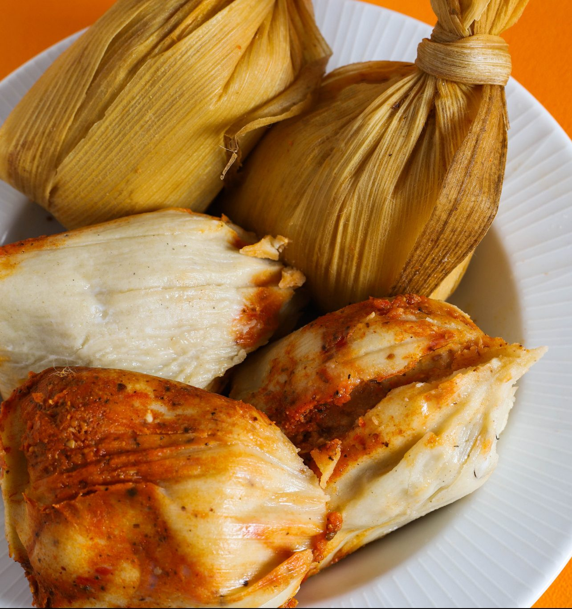

Chuchitos
El platillos más emblemáticos y deliciosos de Guatemala: los chuchitos. Estas pequeñas delicias son una verdadera joya de la gastronomía guatemalteca que te harán agua la boca desde el primer bocado.
Los chuchitos son una especie de tamales pequeños, elaborados con masa de maíz sazonada con un toque de caldo de pollo, achiote y sal. En su interior, encontrarás un relleno delicioso que puede incluir carne de cerdo, pollo o res, acompañado de aceitunas, chiles y pasas, todo envuelto en hojas de maíz y atado con una cuerda de fibra natural.
Estos pequeños paquetitos de sabor son una explosión de sabores tradicionales guatemaltecos en cada bocado. Se sirven calientes y se acompañan tradicionalmente con una deliciosa salsa de tomate y cebolla, que realza aún más su sabor único.
está disponible los chuchitos de pollo a tan solo Q10 y chuchito de res a Q12.00
